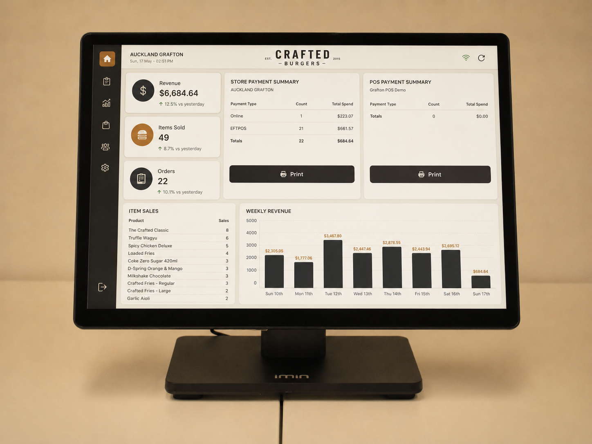

Real-time visibility across every ordering channel and every location — in one dashboard. No spreadsheets, no manual imports, no waiting until end of day to know how the business is running.
Every channel in one view · No manual reconciliation · NZ-built and supported

Every channel. Every location. One clear picture — automatically, without the manual overhead.
Sales, orders, and channel performance updated live as transactions happen — not pulled together manually at close of business. Know how the day is tracking while there's still time to act.
POS, kiosk, web ordering, QR table ordering, and mobile — all captured in one report. No importing from separate systems, no comparing numbers across different dashboards.
For groups and franchise operators, QJumper reporting spans every location in one view. Compare site performance, identify the outliers, and manage the estate without logging into each venue separately.
See which items sell, when your peak periods fall, and how channel mix shifts over time. Operational insight that helps you make smarter decisions about staffing, menu, and promotions.
Payments captured automatically across every channel. Card, contactless, mobile wallet — all reconciled in one place without separate terminal reports or manual cross-checking.
Pull data into your preferred format for accountants, business reviews, or investor updates. QJumper reporting is designed to work alongside — not replace — your existing finance tools.
QJumper Reporting only works this well because every ordering channel feeds into the same platform. Add POS, kiosks, web, QR, or mobile and each one appears automatically in your dashboard.
Book a demo and see the dashboard running with real venue data. No obligation.
We'll be in touch within one business day. No obligation.